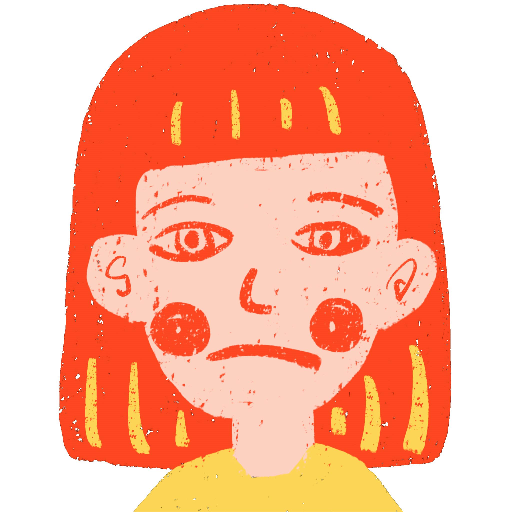

<!DOCTYPE html>
<head><title></title></head>
<body background ="covid.gif" >

</body>
<html lang="en">
<a href="thirddream.html"></a>


<div>

    

</div>


    <style>
        background-image {
        position:fixed;
        z-index:0;
        left:700px;
        top:100px;
        background-repeat: no-repeat;
        }

    <head>
    <style type="text/css">
    *{margin: 0;padding: 0;}
    </style>
    </head>
    <head>
        <meta charset="UTF-8">
        <title>seconddream</title>

        <style>           


            #div1{width: 530px; height: 530px; background-image: url(d2mask.PNG); background-size: 100%; background-repeat: no-repeat; position: absolute; left: 800px; top: 200px}


        </style>
        <script>
            window.onload = function(){
                var oDiv = document.getElementById("div1");

                var offsetX = 0;
                var offsetY = 0;
                //第一步：当对div进行鼠标点击事件的时候，记录下当前鼠标的位置
                oDiv.onmousedown = function(ev){
                    var e = ev || window.event;
                    offsetX = e.clientX - oDiv.offsetLeft;
                    offsetY = e.clientY - oDiv.offsetTop;
                    //第二步：当我们在document下对div进行拖动的时候，给div的left和right进行定位
                    document.onmousemove = function(ev){
                        var e = ev || window.event;

                        oDiv.style.left = e.clientX - offsetX + 'px';
                        oDiv.style.top = e.clientY - offsetY + 'px';
                    }
                }
                //第三步：在document下当鼠标抬起的时候，取消鼠标跟随事件
                document.onmouseup = function(){
                    document.onmousemove = null;
                }
            }
        </script>
    </head>
    <body>

        <div id = 'div1'></div>
    </body>
</html>

